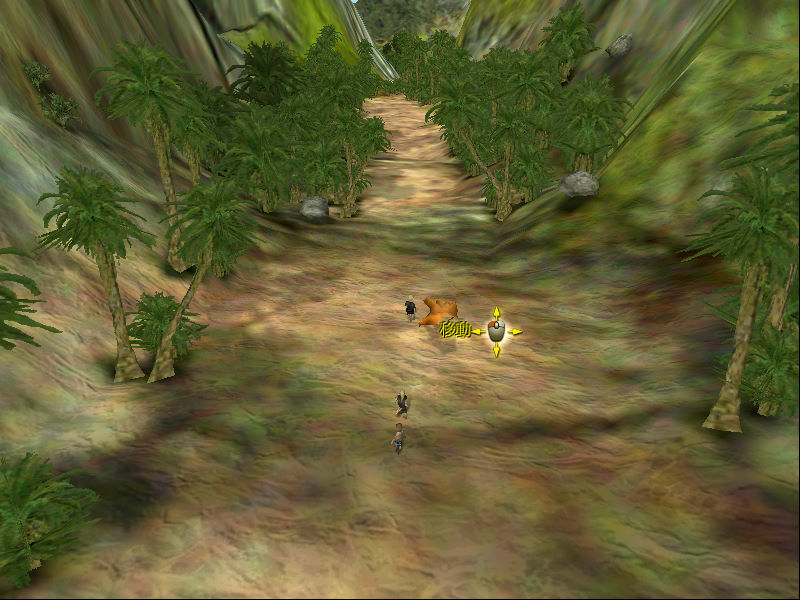
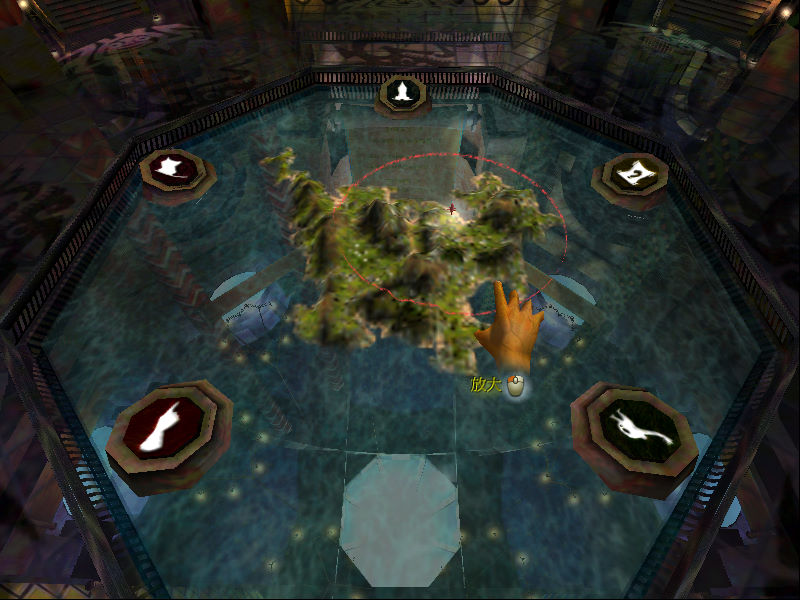
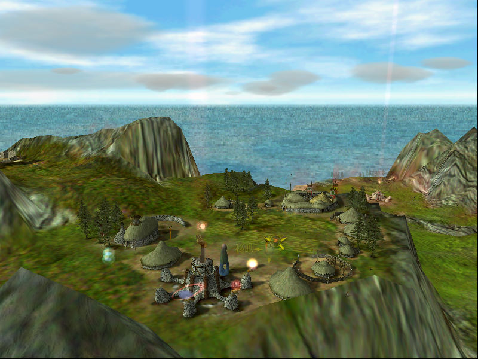

名稱：善與惡1／黑與白1 (Black & White，中文版)
簡介：Lionhead 2001年出品的上帝模擬遊戲，兼具即時戰略的元素，由EA代理發行。2002年
推出「神獸島／生物之島（Creature Isle）」資料片 [待補]。



保護：主程式為光碟SafeDisc 2.10，資料片為光碟SafeDisc 2.51
備註：VirtualBox無法執行，虛擬機請使用VMware。
檔案：crack.rar = 主程式破解檔
crackx.rar = 資料片破解檔